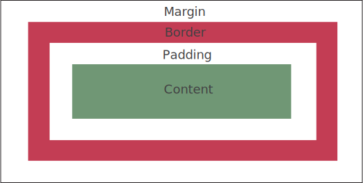

Structure, Phrasing, and Display
Inline elements in HTML are places the content in a line next to each other within the block, and block elements places the entire content within a box. Some inline elements are: anchor, image, italicize, and time. Some block elements are unorder/ordered lists, nav, footer, and main.
In CSS, the display property can be set to: none, inline, block, and inline-block. Display none can show and hide elements without removing any code. Display inline places the content next to each other in a line, and display block sets the element in a box that spans the entire width of the page. However, it sets the box on top of each other rather than next to each other in inline. Display inline-block puts the content next to each other, but it creates a box around each element. Both inline and block are commonly used in the navigation.
Box Model

The CSS box model includes the margin, border, and padding that surrounds each element in HTML. The padding surrounds the content, and it will create a transparent area around the content. Having more padding will add space between the border and content, which will change the height and width of the content. The border surrounds the padding and content. The margin surrounds the border, padding, and content. This means that it will create transparent space around the border, which will adjust the width and height of the content inside.
Box-sizing allows the padding and border to be included into the total width and height. This ensures that the elements are set to the correct size.
Background Images
Images can be added in HTML or CSS. Images in HTML are linked to the page using the img tag, and this will create a space in the webpage for the image. Adding an image to the CSS will add the image as a background, and it will be considered a style element rather than content on the webpage.